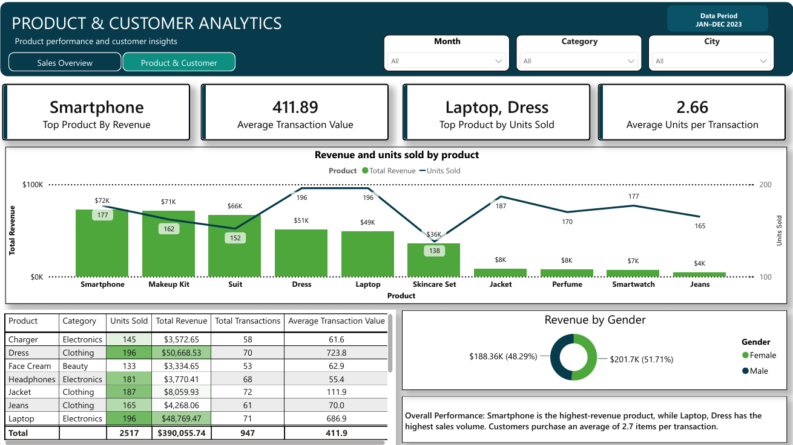

PROJECT 01 · RETAIL BUSINESS ANALYTICS
Retail Sales Analytics
Perusahaan ritel multi-cabang dengan 5 lokasi dan 3 kategori produk mengalami fluktuasi revenue yang tidak konsisten sepanjang 2023 — bergerak dari $20.680 (September) hingga $47.522 (Mei) atau selisih 2,3× tanpa pola musiman yang jelas.
Industri
Retail Multi-Cabang
Periode Data
2023
Transaksi
947
Tools
PostgreSQL · Power BI
🔍 Temuan Utama
- Revenue sangat fluktuatif — rentang $20.680–$47.522 (selisih 2,3×) tanpa pola musiman yang konsisten.
- Penyebab fluktuasi bergantian antar kategori: Maret didominasi Electronics, Juni–September didominasi Clothing.
- Bandung Store = benchmark (kontribusi 26,60%, ATV $469,85), sedangkan Main Store Jakarta = titik terlemah (kontribusi 15,43%, ATV $338,73).
- Kontribusi revenue tidak merata — top 5 kombinasi kategori × toko ≈ 41,7% dari total revenue.
💡 Rekomendasi
- Investigasi performance gap Jakarta dengan Bandung sebagai reference point.
- Monitoring volatilitas Electronics: volume, revenue per unit, product mix, dan discount.
- Evaluasi efektivitas discount terhadap units sold dan revenue per unit.